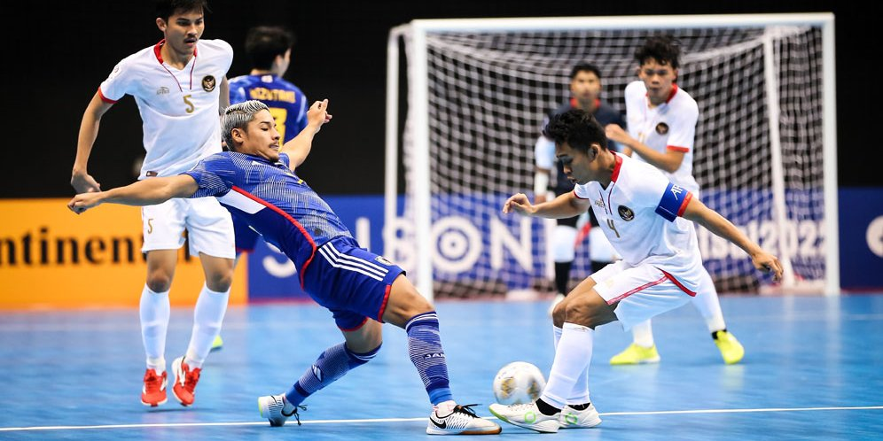

Futsal adalah sebuah permainan sepak bola yang dimainkan dalam ruangan atau lapangan yang lebih kecil dibandingkan dengan lapangan sepak bola biasa. Permainan ini menggunakan bola kecil dengan jumlah pemain yang terdiri dari dua tim, masing-masing dengan lima pemain, termasuk satu orang penjaga gawang.
Futsal berkembang sebagai bentuk permainan sepak bola yang lebih cepat dan teknis. Lapangan futsal biasanya berukuran sekitar 40 meter panjang dan 20 meter lebar, dengan dua gawang di setiap ujung lapangan. Permainan ini dimainkan dengan aturan yang telah ditetapkan oleh Federasi Internasional Sepak Bola Asosiasi (FIFA) dan Federasi Futsal Dunia (Futsal World Governing Body).
Permainan futsal menekankan pada teknik individu, kelincahan, kreativitas, dan permainan cepat. Karena ruang gerak yang lebih kecil, pemain harus memiliki kontrol bola yang baik, kemampuan melewati lawan dengan kecepatan, serta kemampuan mengambil keputusan yang cepat. Permainan ini juga mengandalkan kombinasi umpan pendek, pergerakan tanpa bola, dan teknik tendangan yang presisi.
Futsal populer di banyak negara di seluruh dunia dan sering kali dimainkan di dalam gedung olahraga, seperti aula atau lapangan tertutup. Permainan ini digemari karena keseruannya dan memberikan kesempatan kepada pemain untuk meningkatkan keterampilan teknis dalam ruang yang lebih terbatas.